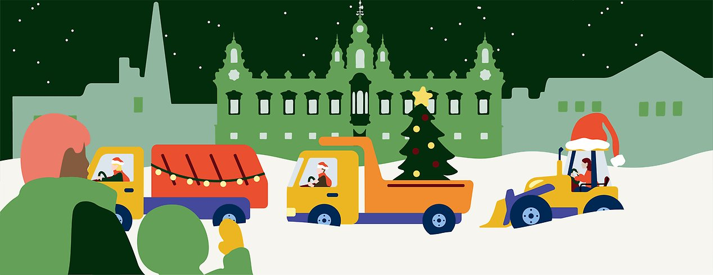
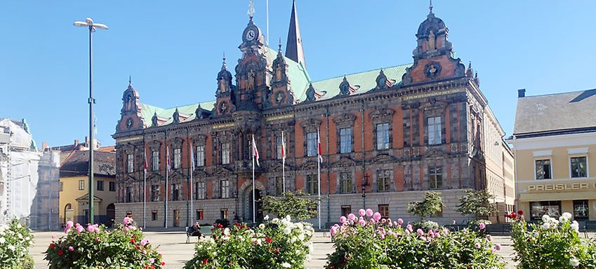

Välkommen till Malmö stad
Malmö är en stad i ständig rörelse. Vi i Malmö stad skapar kraft i den rörelsen. Vi planerar och utvecklar staden tillsammans med Malmöborna och finns till för alla som lever och verkar här. Vad vill du göra idag?

Artiklar från Malmö stad

Julstämning på Gustav Adolfs torg när julbelysningen tänds

Snart rullar Malmös juliga fordonsparad genom stan
Förskolan Korrebäcken fyller 50 år

Direktsändning från kommunfullmäktige
Ceremoni för nya svenska medborgare
Malmö stad arrangerar årligen en ceremoni för att välkomna alla nyblivna svenska medborgare i staden. Medborgarskapsceremonin äger rum på Sveriges nationaldag den 6 juni och har de senaste åren varit en del av Malmö stads nationaldagsfirande på Stortorget. Enligt lagen om svenskt medborgarskap ska alla kommuner minst en gång per år anordna en ceremoni för nya svenska medborgare.
Träna ute i höst
I Malmö finns massor av möjligheter att träna utomhus i vått och torrt, oavsett om du föredrar jogging, gym, bollsport, klättring, skate eller något helt annat.